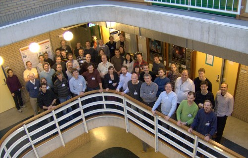

News & Announcements
January 6, 2009: Slides now available for download
Slides for most of the presentations given at the workshop are now available on the schedule page. Speakers whose slides are not yet available are encouraged to log in to the website and upload them, preferably as a PDF.
Many thanks to all those who attended the workshop and made it a success!

{kind=link}
December 20, 2008: Workshop complete
The workshop is now complete. Thanks to all those who attended and made it a success!
Speakers are reminded to upload their talks (through the profile page), preferably in PDF format: we will make these available through the website shortly.
November 11, 2008: Workshop schedule available
The workshop schedule is now available.
October 2, 2008: Workshop capacity reached
The maximum number of workshop participants have now registered. If you have not yet registered, but would still like to attend, please fill out the registration form and you will be added to a waiting list in case more places become available.
September 24, 2008: Workshop nearing capacity
Due to the size of the venue, we are only able to accept a limited number of registrations. The workshop is already nearly full: please register soon to avoid disappointment.
August 22, 2008: Second Announcement
In December 2008, the LOFAR Transients Key Science Project will host a workshop on transient and variable radio phenomena observable with LOFAR. The aims of the meeting are not only to revisit and explore the science case for radio transients, but also to discuss the planning and execution of LOFAR strategies for transient detection, identification, classification and announcement (including synergies with other observatories and facilities). The workshop is very timely, with several new LOFAR stations online by this point, commissioning observations with LOFAR-20 due to begin in summer 2009, and initial all-sky monitoring modes by 2010.
There is a lot of time available for contributed talks and posters (deadline for abstract submission Oct 17). There will be a small conference fee of 100 Euros, payable in cash at the workshop.
Details of travel and hotels will be provided closer to December, to those who have registered. There may be a small amount of financial support available for people with limited travel funding.
Invited speakers include:
- Duncan Lorimer - Extragalactic radio transients
- Maura McLaughlin - RRATs and other part-time pulsars
- Ben Stappers - LOFAR pulsar surveys
- Jochen Eisloeffel - Young Stellar Objects
- Rachel Osten - Flare stars and stellar phenomena
- Philippe Zarka - Radio bursts from extrasolar planets
- James Miller-Jones - Microquasar jets at low frequencies
- Casey Law - The LOFAR transients pipeline
- Joe Lazio - LOFAR transients in the context of SKA and other pathfinders
- Rob Fender, Ralph Wijers - LOFAR transients strategy
One of the key capabilities of LOFAR will be its ability to explore very large fields of view with high time resolution and high cadence, exploring the variable and transient radio sky in a way never previously possible. We will break new ground in the study of explosive particle acceleration associated with relativistic flows such as microquasar jets and gamma-ray burst afterglows. The LOFAR Radio Sky Monitor (RSM) will provide hemispherical monitoring, identification and reporting of all such phenomena, and will be able to detect very bright radio bursts at cosmlogical distances. In addition we will undertake the most comprehensive northern hemisphere survey for pulsars, will monitor flare stars and brown dwarfs, and will search for radio bursts from nearby extrasolar planets. Finally, we will push at the boundaries of explored parameter space in search of new phenomena.
May 14, 2008: First Announcement
The LOFAR Transients Key Science Project would like to announce a meeting on transient and variable radio phenomena observable with LOFAR.
One of the key capabilities of LOFAR will be its ability to explore very large fields of view with high time resolution and high cadence, exploring the variable and transient radio sky in a way never previously possible. We will break new ground in the study of explosive particle acceleration associated with relativistic flows such as microquasar jets and gamma-ray burst afterglows. The LOFAR Radio Sky Monitor (RSM) will provide hemispherical monitoring, identification and reporting of all such phenomena, and will be able to detect very bright radio bursts at cosmlogical distances. In addition we will undertake the most comprehensive northern hemisphere survey for pulsars, will monitor flare stars and brown dwarfs, and will search for radio bursts from nearby extrasolar planets. Finally, we will push at the boundaries of explored parameter space in search of new phenomena.
The aims of this meeting are not only to revisit and explore this science case, but to discuss the planning and execution of LOFAR strategies for transient detection, identification, classification and announcement (including synergies with other observatories and facilities).